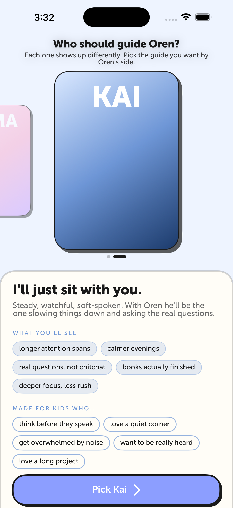
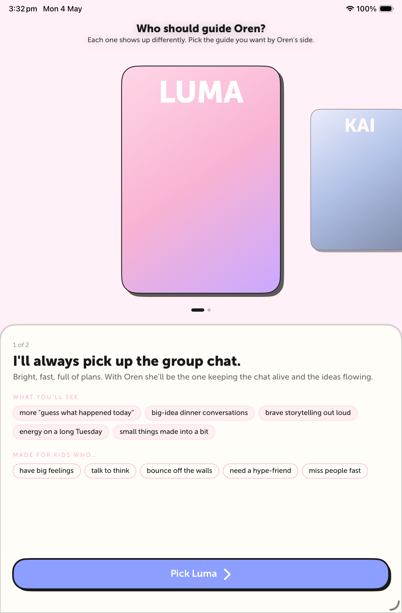
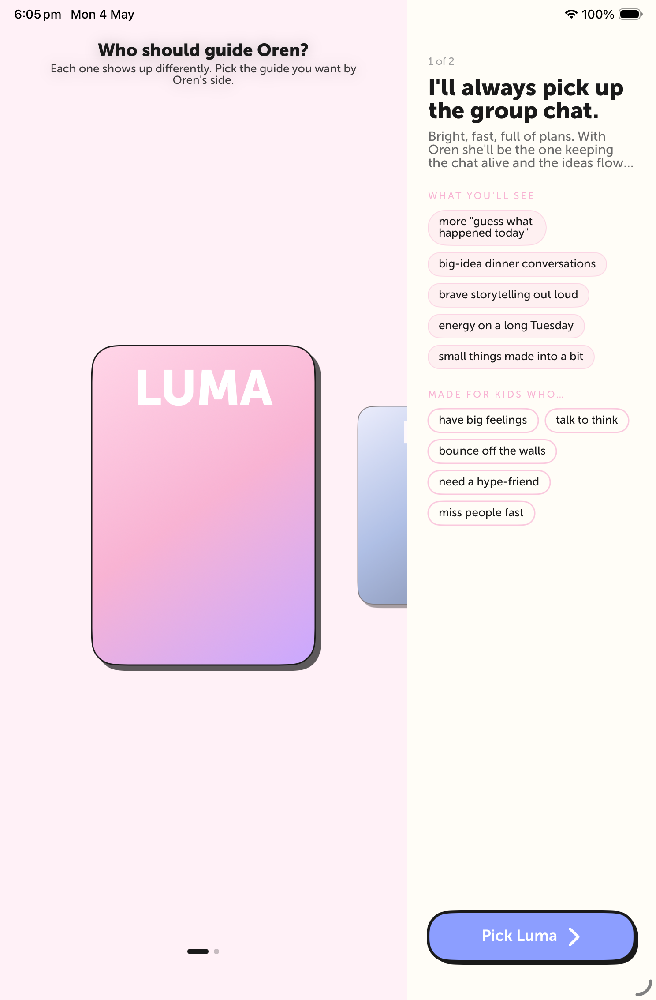

iPhone 17 Pro Max — Kai focal
Cover-flow card with the focal "KAI" portrait, blue canvas tint extending through the safe area. Headline + parent-facing subtitle at top, lore panel as a bottom sheet with the new structure: tagline → guide-style two-beat → "What you'll see" pills → "Made for kids who…" pills → CTA.

iPad mini — Luma focal, portrait
Same composition with iPad-tuned spacing. Pills wrap into wider rows, tagline and guide prose breathe more, all five outcomes and all five "Made for kids who…" items fit on one row each.

iPad mini — Luma focal, landscape composition
Landscape layout uses OnboardingLandscapeSplit: cover-flow hero on the
left, lore panel on the right with the full content stack.
Caveat: the macOS Simulator rotation API was blocked in this environment
(System Events accessibility refused), so dimensions stay iPad-portrait — but the
SwiftUI composition rendered inside is the actual landscape layout. On a real iPad
in landscape the columns breathe wider (pills won't wrap as tightly).

What's new vs. v1
- Header subtitle: "Pick the guide you want by Oren's side." (was "the friend you want") — boundary-respecting language for an AI-to-kid relationship.
- "Into" → "What you'll see": filled-tinted pills now describe observable outcomes (longer attention spans, calmer evenings, real questions, etc.) instead of character self-trivia.
- "Not really" → "Made for kids who…": outlined pills with character-accent stroke. Kid-trait fragments parents can recognize (have big feelings, talk to think, get overwhelmed by noise…). The closing argument right above the CTA.
- Section headers: small-caps body font with 2pt kerning for editorial-magazine pacing.
- Two-beat guide prose preserved: "Bright, fast, full of plans. With Oren she'll be the one keeping the chat alive and the ideas flowing."